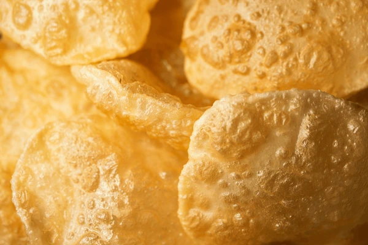

Jhalmuri

The ultimate bengali delicacy
Luchis are made from finely milled flour (maida), unlike puris, which are usually
made from whole-wheat flour (atta) in several parts of the sub-continent.
What makes a good luchi is its flaky interior and crispy exterior.Rolling
perfectly round luchis is a skill and it is absolutely alright if you don't get
it right the first time. Like every skill, this too develops with time and
effort. Yet, what remains unchanged is the versatility of this dish—you can pair
it with meat, dal, or even with a simple potato curry. In fact, there are many
Bengali households where luchi is eaten just with sugar.
Ingrediants
- 200 g maida (all-purpose flour)
- 4 g salt
- 10 g sugar
- 15 g vegetable oil/ghee
- 100-110 g hot water
- vegetable oil for deep-frying
Steps
- Take maida in a mixing bowl, with salt, sugar, and oil/ghee.
Distribute the oil evenly so that a fistful of flour when pressed together
retains its shape.
- Add water and knead the flour for 10 minutes. The dough may seem a little
tacky at first, but it will come together in the end. Cover and rest for
30 minutes.
- Divide the dough into 20 equal portions (of about 16 g each). Rest these
again for 10 minutes to relax the dough.
- When you are ready to roll the luchis out, heat vegetable oil in a kadai
for deep-frying.
- Oil your rolling surface and rolling pin, and roll the luchis into flat
discs of about 10 cm diameter.
- Carefully lower the luchi (one at a time if you are a beginner) into hot oil
(oil temp: ~220°C). Press down gently and rotate to help it puff.
Flip, and fry the other side.
- Drain from the oil and serve hot with begun bhaja, mutton kosha, or anything
you like.